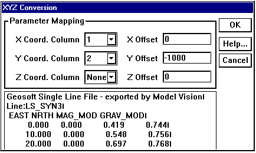
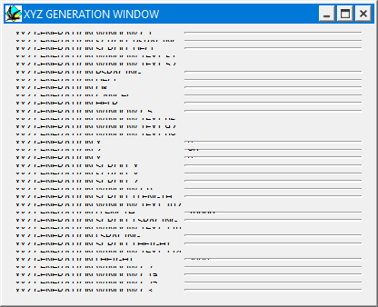
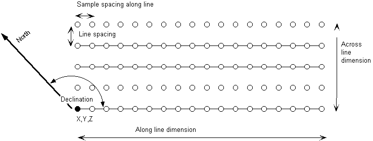

Tutorial 7: Importing flight-line specifications
Excercise 7: Importing flight line positional information and generating synthetic surveys
In this exercise we will see how to calculate geophysical profiles at pre-defined positions. The profile positions are taken from a ModelVision export file, and allow us to compare the results from ModelVision and Noddy for the same model.
a) Open up the mvtest.his file, which contains a NS vertical dyke in a empty background. Look at a block diagram to see the dyke, and then go to the menu Geophysics->XYZ Point Data->Import from File, and select the file mv_line.geo (a Geosoft format file from ModelVision, which originally had a .dat suffix).
b) This will bring up a window which allows the user to select which columns to use for X, Y & Z data, and to add an offset to these values. If there is no column of Z data, as in the example file provided, simply select None from the Z Column list. Unless draped surveys are specified, the Z value will be calculated from the Calculation Altitude height from the top of the block as defined in the Geophysics Options window. A small window showing the first 5 lines of the file is provided as a check.
All of the specified X,Y,Z locations must be within the area specified for calculation in the Geophysics Options window, otherwise an error message will appear. Any lines of text that do not start with a valid number will be assumed to be a comment.

c) Once the desired columns and offsets have been applied, click on OK and a new window will appear that allows you to save the newly created data. This file may then be viewed with a text editor or spreadsheet package, and will contain the new gravity and magnetic data at the desired locations.
d) As a separate exercise, we can also generate a synthetic survey over this area using the Geophysics->XYZ Point Data->Generate menu option. You will be presented with a window that allows you to alter the survey specifications:

The Position, Orientation and Area Dimensions parameters are defined according to the figure below:

e) You can create either a rock property table for each X,Y on the top of the block (if you select Geological as the Type of File) or the total field values at those positions (if you select Geophsyical).
The geology file you create can have any extents, and will look something like this:
Noddy Geological Point Description
VERSION=5.01 LINES=420 ANICALC=1 REMCAL=1
| X | Y | Z | DENSITY | SUSX | SUSY | SUSZ | DECL | AZI | STR | DIP | DDIR | PITCH | NAME |
| 0.0 | 0.0 | 5000.0 | 5.0 | 0.0 | 0.0 | 0.0 | 30.0 | 30.0 | 0.0 | 90.0 | 90.0 | 0.0 | Gabbro |
| 50.0 | 0.0 | 5000.0 | 5.0 | 0.0 | 0.0 | 0.0 | 30.0 | 30.0 | 0.0 | 90.0 | 90.0 | 0.0 | Gabbro |
| 100.0 | 0.0 | 5000.0 | 5.0 | 0.0 | 0.0 | 0.0 | 30.0 | 30.0 | 0.0 | 90.0 | 90.0 | 0.0 | Gabbro |
| 150.0 | 0.0 | 5000.0 | 5.0 | 0.0 | 0.0 | 0.0 | 30.0 | 30.0 | 0.0 | 90.0 | 90.0 | 0.0 | Gabbro |
| 200.0 | 0.0 | 5000.0 | 5.0 | 0.0 | 0.0 | 0.0 | 30.0 | 30.0 | 0.0 | 90.0 | 90.0 | 0.0 | Gabbro |
| 250.0 | 0.0 | 5000.0 | 5.0 | 0.0 | 0.0 | 0.0 | 30.0 | 30.0 | 0.0 | 90.0 | 90.0 | 0.0 | Gabbro |
| 300.0 | 0.0 | 5000.0 | 5.0 | 0.0 | 0.0 | 0.0 | 30.0 | 30.0 | 0.0 | 90.0 | 90.0 | 0.0 | Gabbro |
The geophysics file must contain X,Y locations within the area selected from the Geophysics Options window, and will look something like this:
Noddy Geophysical Point Data
VERSION=5.0 LINE=402
| X | Y | Z | GRAV | MAG |
| 0.000000 | 0.000000 | 0.000000 | 0.000000 | -77.483611 |
| 50.000000 | 0.000000 | 0.000000 | 0.000000 | -77.483611 |
| 100.000000 | 0.000000 | 0.000000 | 0.000000 | -65.381012 |
| 150.000000 | 0.000000 | 0.000000 | 0.000000 | -65.381012 |
| 200.000000 | 0.000000 | 0.000000 | 0.000000 | -65.381012 |
| 250.000000 | 0.000000 | 0.000000 | 0.000000 | -65.381012 |
| 300.000000 | 0.000000 | 0.000000 | 0.000000 | -78.514437 |
| 350.000000 | 0.000000 | 0.000000 | 0.000000 | -78.514437 |
| 400.000000 | 0.000000 | 0.000000 | 0.000000 | -78.514437 |
| 450.000000 | 0.000000 | 0.000000 | 0.000000 | -78.514437 |
| 500.000000 | 0.000000 | 0.000000 | 0.000000 | -80.658351 |
| 550.000000 | 0.000000 | 0.000000 | 0.000000 | -80.658351 |
| 600.000000 | 0.000000 | 0.000000 | 0.000000 | -80.658351 |
| 650.000000 | 0.000000 | 0.000000 | 0.000000 | -80.658351 |
| 700.000000 | 0.000000 | 0.000000 | 0.000000 | -80.225422 |
| 750.000000 | 0.000000 | 0.000000 | 0.000000 | -80.225422 |
| 800.000000 | 0.000000 | 0.000000 | 0.000000 | -80.225422 |
| 850.000000 | 0.000000 | 0.000000 | 0.000000 | -80.225422 |
| 900.000000 | 0.000000 | 0.000000 | 0.000000 | -80.282955 |
| 950.000000 | 0.000000 | 0.000000 | 0.000000 | -80.282955 |
Noddy · open source under the MIT licence · Loop3D/noddy_qt